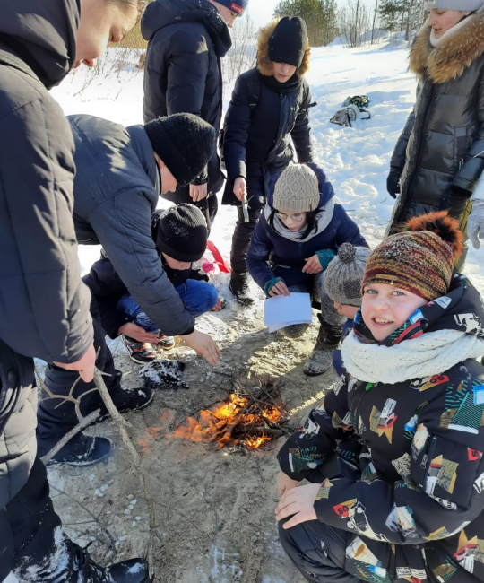

Центр детско-юношеского туризма
Место, где каждый ребенок от 5 до 17 лет сможет получить базовые навыки туризма и ориентирования на местности

Коротко о центре
Центр детско-юношеского туризма — это место, где экраны гаджетов сменяются шумом леса, а виртуальные карты превращаются в настоящие компасы. Вместо скучных лекций — вязка узлов, установка палатки, спортивная карта и азимут.
Каждый выпускник Центра умеет брать на себя ответственность и находить выход из любой ситуации. Присоединяйтесь к нам, чтобы подарить ребенку приключения и дружбу на всю жизнь!
Программы
Часто задаваемые вопросы
Мы принимаем детей с 5 до 17 лет включительно. Для каждой возрастной группы разработана своя программа: для малышей (5–7 лет) — это игровые занятия по основам ориентирования на территории парка; для средней школы (8–12 лет) — полный курс начальной туристской подготовки; для старших (13–17 лет) — углубленное изучение техники пешеходного туризма, топографии и участие в соревнованиях.
Нет, специальная подготовка не требуется. Наш Центр создан именно для того, чтобы обучать детей с нуля. Главное — это желание ребенка и отсутствие медицинских противопоказаний для занятий физкультурой. Мы учим всему постепенно: от правильной укладки рюкзака до прохождения спортивных маршрутов.
У нас комбинированный формат. Теоретические занятия (топография, устройство узлов, медицина) проходят в уютном учебном классе. А практические занятия, которых в программе большинство, выезжают в городские парки, лесопарковые зоны и на загородные полигоны. Сезонность не мешает нам заниматься: зимой мы осваиваем лыжный туризм и зимнее ориентирование.
Да, походы — это главная награда для наших воспитанников. В зависимости от уровня группы мы проводим однодневные походы выходного дня (раз в месяц для младших групп) и многодневные слеты и соревнования (2-3 раза в год для средних и старших групп). Все выезды строго контролируются инструкторами, имеющими лицензию на проведение детских туристских мероприятий.
Безопасность — наш главный приоритет. Все инструкторы Центра имеют профильное педагогическое образование и допуск к работе с детьми, а также действующие квалификации «Спасатель» или «Инструктор детско-юношеского туризма». На каждых 8–10 детей приходится один взрослый инструктор. Во время походов мы всегда имеем при себе укомплектованную медицинскую аптечку и средства связи (рации, спутниковые трекеры). Маршруты согласованы с МЧС.
Да, для создания командного духа мы рекомендуем приобрести фирменную бейсболку и футболку Центра, но это не обязательно.
Мы проводим обучение на основе бюджетных ассигнований. Для записи на программу необходимо иметь сертификат дополнительного образования.